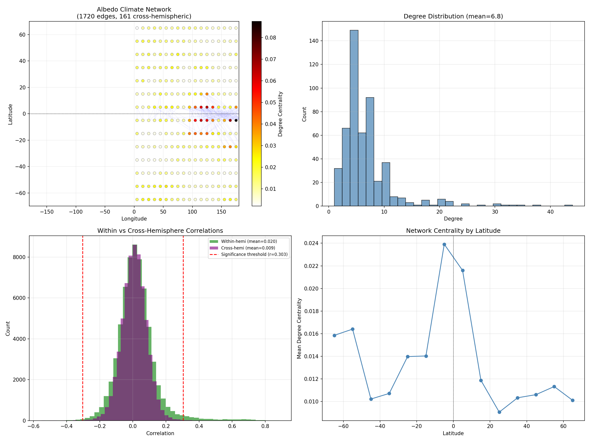
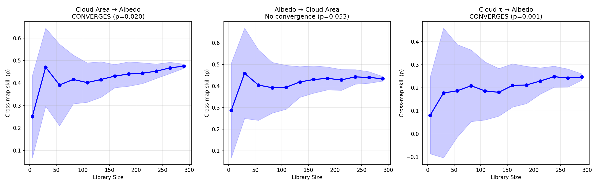
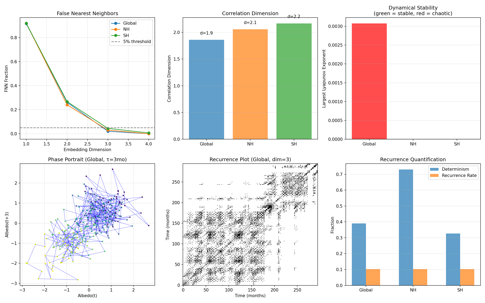

Agentic Discovery for Climate Science
An autonomous AI scientist, architecturally inspired by Kosmos, pointed at a question I had already worked on as a human co-author: what maintains the stability and hemispheric symmetry of Earth's top-of-atmosphere albedo?
The setup makes this a fair test of autonomous discovery rather than a demo. The
Communications Earth &
Environment paper established the hypotheses and the methods already tried. The system
was given the same data and explicitly forbidden from re-treading that ground; its
prior_work.yaml encodes what the paper had already done. Everything it found had
to come from methods the original analysis never used.
Over 19 cycles it ran 49 analyses across 12 novel methodologies on CERES EBAF-TOA Ed4.2.1 (25 years of satellite observations, 14.3 million rows) and produced 21 findings that survived adversarial review.
How the loop works
Each cycle: read the current world model, let Monte Carlo Tree Search over the method × hypothesis coverage matrix recommend the next experiment, write a self-contained analysis script, run it, and then, before anything is allowed into the record, attack it.
The adversarial gate is the part I care most about. A result is only recorded if it survives three mandatory checks:
- Shuffle test. Re-run on permuted data. If the finding persists on noise, it was trivially true and is discarded.
- Confound test. Residualize against Niño 3.4 and strip the seasonal cycle more aggressively. If the effect vanishes, it was a confound.
- Robustness test. 500× bootstrap with a 95% CI excluding zero, split-half across 2000–2012 vs 2013–2025, or parameter sweeps. Fragile results are dropped.
Failed experiments are still written to the world model, because the system needs to know what it has already ruled out, and a method that fails on one hypothesis often gets redirected to another. Four of the 19 cycles were purely adversarial, spent attacking findings the system had previously recorded rather than generating new ones.
What it found

ENSO mediates hemispheric coupling. Six independent methods converged on the tropical Pacific as a communication hub between hemispheres. Transfer entropy shows SH→NH information flow dominant at 3–6 month lags (TE = 0.274, p < 0.001, z = 6.92), surviving phase-randomized surrogates. Wavelet coherence localises the coupling to the ENSO band, 24–60 months, with SH leading NH by roughly four months. Conditioning on ENSO phase shows the coupling activates during La Niña and is not significant during El Niño. Five of six methods survive Bonferroni correction; final confidence 0.90.

Cloud→albedo causality is one-way. This is the finding that most interested me, because it corrected an intermediate result the system itself had produced. An adversarial cycle found that after removing the ENSO signal, linear Granger causality appeared bidirectional, which would have undercut the cloud buffering hypothesis. Nonlinear convergent cross mapping resolved it: clouds respond to ENSO, which creates the appearance of bidirectional linear coupling, but the cloud→albedo causal pathway is genuinely unidirectional. Consistent in both hemispheres, and the relationship never reverses across 241 rolling five-year windows.

The system reported its own failure. The invariant-properties hypothesis finished at confidence 0.50: inconclusive, with one solid supporting result, two invalidated, and one actively refuting. It did not resolve this into a clean story. That restraint is the behaviour I most wanted from the design; an agent that converges on a tidy conclusion regardless of evidence is worse than useless in a scientific setting.
Synthesis
The three hypotheses resolved into complementary parts of one mechanism: Earth's geometry sets an approximately two-dimensional attractor envelope, clouds causally maintain albedo within it, and ENSO coordinates cloud fields across hemispheres to preserve symmetry.
Notes on what this does and doesn't show
These findings are the output of an autonomous system, not a peer-reviewed result. They have not been through external review, and the adversarial checks, while real, are checks the system applies to itself. I'd treat the ENSO teleconnection result as the most solid (six independent methods, five surviving Bonferroni) and the invariant-properties conclusion as genuinely open.
What I take from it is less about albedo than about architecture: MCTS-guided experiment selection plus a hard adversarial gate produces a system that discards most of what it generates, and the discarding is where the value is.
← all projects